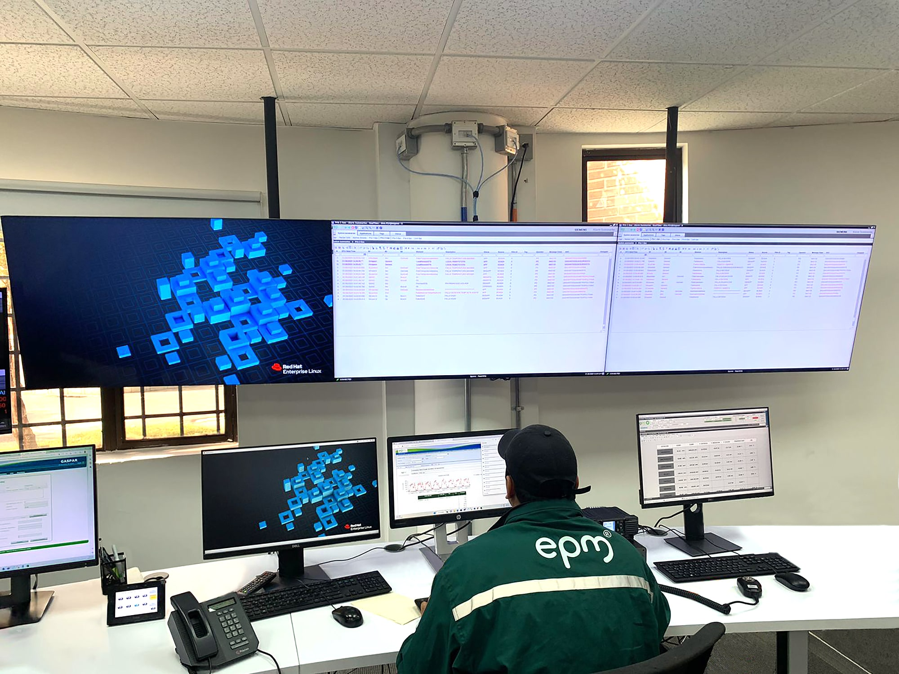
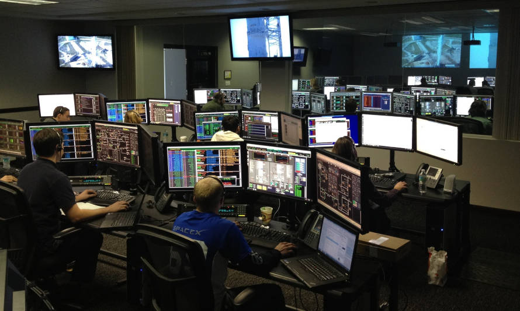

Centraliza la información, genera alertas automáticas y ayuda a tu equipo a tomar decisiones rápidas, reduciendo interrupciones y garantizando la continuidad del servicio.
Antes de usar TelecomGuard, nos enterábamos de los problemas cuando los usuarios ya estaban afectados. Ahora recibimos alertas anticipadas y podemos actuar antes de que ocurra una caída.
TelecomGuard nos dio visibilidad completa de nuestra infraestructura en un solo dashboard. Pasamos de reaccionar a los incidentes a prevenirlos, lo que mejoró la continuidad del servicio.
Precio Mensual
Precio Mensual
Precio Mensual


Detecta fallas antes de que ocurran y toma el control de tu infraestructura en tiempo real.
“Empieza hoy a monitorear de forma inteligente”